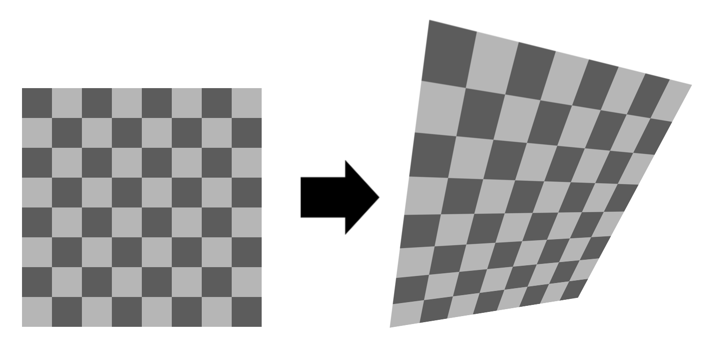

Shape
Shape methods return details about the border of each cell.
Cells are typically polygons, for 2d, or meshes, for 3d.
GetPolygon
(2d only) gives the vertices making up the polygon of the cell. There's also an extension method that's easier to use.
GetMeshData
(3d only) Gets the mesh of a single cell.
ToMeshData
Converts the whole grid to a mesh.
Deformation
For advanced grids, particularly MeshGrid, each cell of the grid may be a different shape, even though they share the same cell type.

In this case, you can call GetDeformation which returns a Deformation. This class assists in smoothly interpolating across that irregular shape.
Each deformation is a continuous map, which maps a cell from its canonical shape (a regular square, triangle, etc) to the shape of a specific cell in the grid. This is done via linear/bilinear or trilinear interpolation as appropriate.